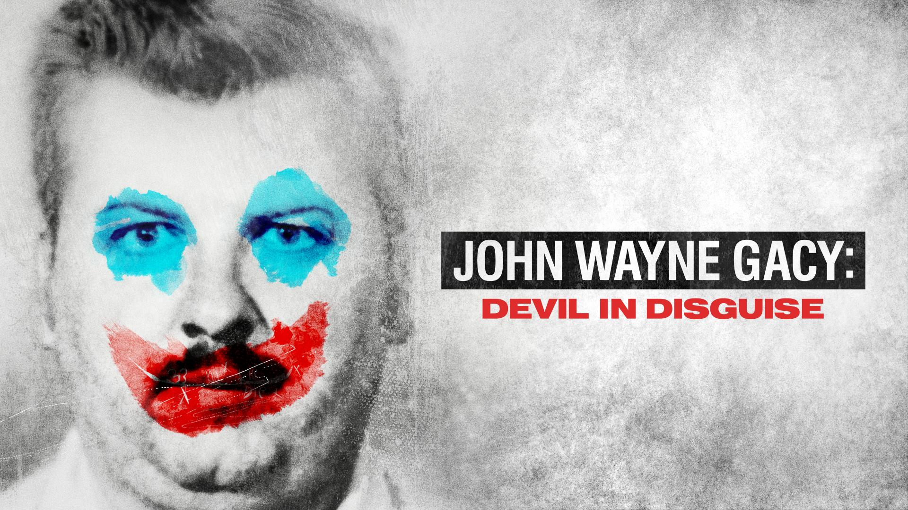

Mis hobbies!
Mis hobbies!
Indice
Redes


Sobre mi
Mi nombre es Leonardo Contreras Martinez, naci el 13 de agosto del 2003 en la ciudad de Saltillo, Coahuila. Soy una persona muy apasionada al mundo de la tecnologia y videojuegos especialmente, desde ni;o me encantaba usar computadoras, celulares jugar videojuegos etc... solamente para matar el tiempo, eran un refugio para mi, a los 12 a;os arme mi primera computadora "gamer" donde solia jugar minecraft mas que nada, actualmente tengo una gama mas grande de hobbies que mencionare dentro de esta pagina mas adelante!
Videojuegos
Desde muy temprana edad comence a jugar videojuegos, uno de los que mas me ha marcado ha sido The Legend of Zelda: Majora's Mask. Pero no es el unico juego que he jugado, aqui hay una lista de mis juegos favoritos:
Musica
La musica es una parte muy importante de mi vida, ha tenido un impacto tan fuerte en mi que no se que haria sin ella, acontinuacion una lista de mis artistas favoritos:
Series/peliculas
No soy muy fanatico del cine ni de consumir series, pero estas son de mis favoritas de lo que he visto:
Documentales
Uno de mis hobbies es tambien ver documentales, principalmente de temas de crimenes, investigaciones, tecnologia etc... en este caso no tengo un listado
mas sin embargo uno de mis documentales favoritos es de John Wayne Gacy: Devil in Disguise.

Gastronomia
Soy un fanatico de la gastronomia! me encanta probar distintos tipos de comida que sean de mi agrado, principalmente en tema de carnes y tambien cocinar.
En secundaria tuve taller de cocina donde aprendi a hacer reposteria, entre mis favoritos estan el pie de queso y limon.
Tambien me encanta la pizza, es mi comida favorita y una de mis comidas favoritas tambien es la papa, en cualquiera de sus presentaciones.
Investigacion
Otro de mis hobbies es investigar, no tanto en un ambito profesional sino que investigar de temas que son de mi interes, como la geografia, cultura de otros paises, tecnologia,
videojuegos etc... casi siempre que tengo chance estoy consultando temas que sean de mi interes ya que siento que me estimula mucho y siempre estoy dispuesto a aprender algo nuevo.
Programacion
Por ultimo uno de mis hobbies favoritos que tambien es uno que adqueri muy recientemente es el de programar, nunca en mi vida habia programado antes de entrar a la universidad, donde tuve mi clase de Fundamentos de programacion con la ingeniera Helue.
Gracias a ella me incentivo el deseo de aprender lo mas que pueda de programacion, asi yo mismo desarrollando un gusto a este hobbie y programando demasiado tiempo.
A dia de hoy he programado varios proyectos y me encontraba trabajando en un proyecto para una optica como un gestor de clientes.
Lo mejor de este hobbie para mi es el hecho de en un futuro mejorar y poder monetizarlo, al final de cuentas es algo que me gusta y me gustaria vivir de ello.